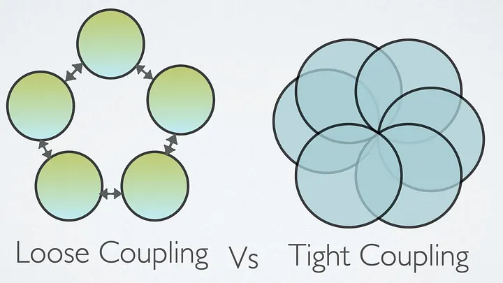

Transient
Щоразу новий об’єкт. Два GetService підряд дадуть різні Guid.
Лекція 05
Не створюйте сервіс самі — отримайте його ззовні.

Зміна логера змушує чіпати MessageProcessor.
public class MessageProcessorForTightCoupling {
private LogManager logManager;
public MessageProcessorForTightCoupling() {
this.logManager = new LogManager(); // сам створив
}
}using IHost host = Host.CreateDefaultBuilder()
.ConfigureServices((_, services) => {
services.AddSingleton<IEmailNotification, EmailNotification>();
services.AddSingleton<NotificationService>();
}).Build();
var sender = host.Services.GetService<NotificationService>();
sender.PushNotification("DI is not DIP");Lifetime підказує контейнеру, як довго житиме екземпляр після GetService.
Щоразу новий об’єкт. Два GetService підряд дадуть різні Guid.
Один об’єкт на scope. У вебі один scope — це один HTTP-запит. У консолі ви створюєте scope самі.
Один об’єкт на весь застосунок. Усі ваші scope бачать той самий екземпляр.
Кожен сервіс у конструкторі запам’ятовує свій Guid. Порівняйте їхні ідентифікатори.
services.AddTransient<ITransientOp, Operation>();
services.AddScoped<IScopedOp, Operation>();
services.AddSingleton<ISingletonOp, Operation>();
using var scope1 = provider.CreateScope();
using var scope2 = provider.CreateScope();
// у scope1 два Transient — різні
// у scope1 два Scoped — однакові
// Scoped у scope1 і scope2 — різні
// Singleton у scope1 і scope2 — один і той самийDbContext, поточний користувач, unit of work.using var scope = host.Services.CreateScope();HttpClient.Довгоживучий сервіс «бере в полон» короткоживучий. Ваш Scoped тоді житиме стільки ж, скільки й Singleton — тобто весь час роботи застосунку.
services.AddScoped<IOrderDb, OrderDb>();
services.AddSingleton<OrderCache>(); // ctor(IOrderDb db) — погано
// OrderCache створиться раз і триматиме один OrderDb назавжди.
// Другий HTTP-запит побачить чужі дані.Правило: залежність живе не довше за свого власника. Singleton ← лише Singleton. Scoped ← Scoped або Singleton. Transient ← будь-що.
new LogManager() чи new EmailNotification() — погана ідея. Так клас знову сам збирає свої залежності.Program (або Startup для вебу). Це так званий composition root.GetService отримують уже готові об’єкти.new для дрібниць ніхто не забороняє: List<T>, рядки, Guid.NewGuid(), DTO. Ми говоримо про сервіси з поведінкою, а не про прості дані.Після лекції
У тій самій лабораторній з бібліотеки: зареєструйте сервіси в IoC-контейнері (lifetimes на місці).